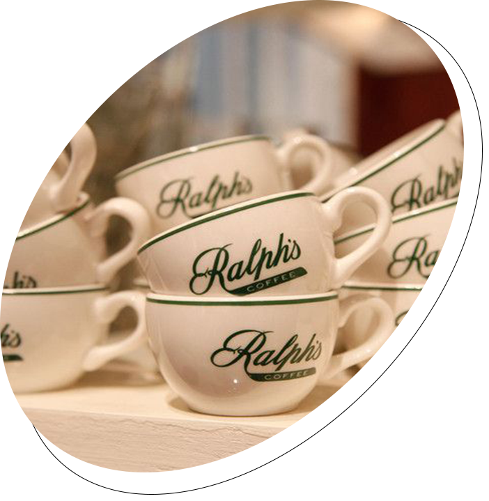

COFFEE
MUSEUM
여유를 잊고 살게 만드는 바쁜 일상 속에 지친 분들께
커피 한 잔에 담겨있는 여러가지 위로를 전달하고자 합니다.
여유를 잊고 살게 만드는 바쁜 일상 속에 지친 분들께
커피 한 잔에 담겨있는 여러가지 위로를 전달하고자 합니다.
본인의 취향에 맞는 향을 시향 후 '나만의 커스텀' 향수 만들기
밀랍과 커피를 활용한 '왁스타블렛'(밀랍커피방향제)만들기
컵케익 비누/ 아이스커피비누/ 세안용 비누/ 바디비누 만들기
정상에서 충주호를 내려다보면 호수에 맞닿아 있는
산자락들의 모습이 마치 악어떼가 물속으로 기어
들어가는 형상과 같다해서 붙여진 이름이다.
충주커피박물관 -> 악어봉
자동차로 4분 소요
주차장에서 도보 20~30분 소요
독립된 코스나 다름 없는
옥순봉, 구담봉, 제비봉, 포암산, 도락산, 금수산 등
경관이 수려하다.
충주커피박물관 -> 월악산
자동차로 16분 소요
달천강이 빚어 놓은 경관 중 가장 으뜸이라고 해도
과언이 아닐 만큼 그 경치가 탁월한 곳입니다.
충주커피박물관 -> 수주팔봉
자동차로 30분 소요
약 8km 길이의 계곡이며, 한 여름에도 더위가
느껴지지 않는 월악산의 울창한 숲 속에 자리 잡고 있다.
충주커피박물관 -> 송계계곡
자동차로 11분 소요
수안보 휴게소 쪽 용천 삼거리 월악산, 송계계곡, 제천, 단양 방면 3km 직진 후 SK내사주유소 맞은편에 위치하고 있습니다